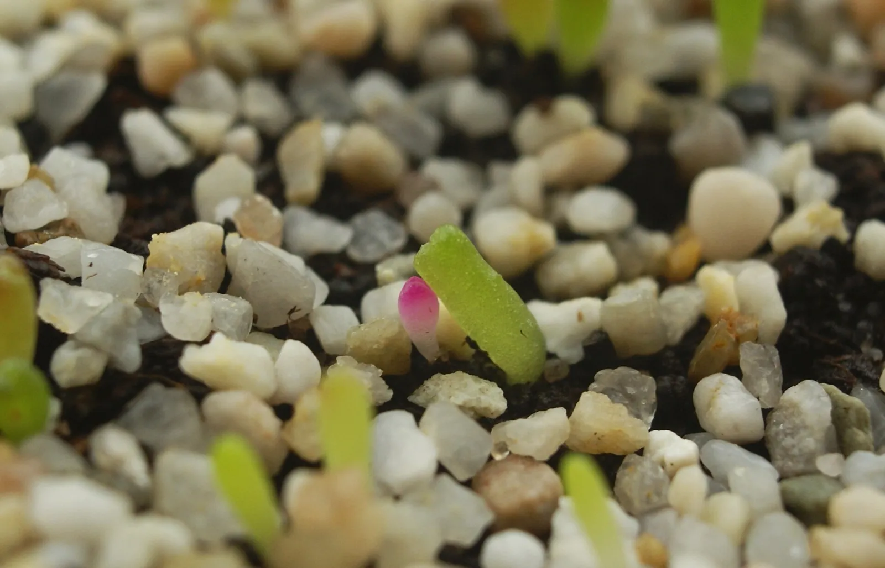

Explainers
The reasoning behind the planner, written out: what it refuses to tell you and why, which geographic number does which job, and where the data model came from.
- Why this planner will never give you a companion-planting chart The grid of good and bad neighbours is the most-copied thing in garden writing, and one of the least examined. Here's what happens when you actually check it.
- Your hardiness zone does not know your frost date Zone, frost dates and latitude are three different numbers that answer three different questions. Nearly every garden tool uses the first one for all three.
- Rotation belongs to the ground, not to the bed Most garden apps pin crop history to a bed - move the beds and it's gone. Here's why this one attaches history to the soil instead, and what that gets you.
- What a milpa is, and why Three Sisters is only part of it The best-known polyculture in North American gardening is really the northern tip of a much older field system - and the difference comes down to scale.
- How this is built - a rules corpus in git, and an app that is only its front end The real product is a versioned YAML corpus with evidence grades and an engine checked against it. The web app is a thin layer on top - the least interesting part.
- What pollination actually needs, and what nobody can tell you Some crops set fruit alone; some need an insect to carry the pollen. That difference decides what a bad year means - and one part, no app can honestly claim to know.
- What a garden planner usually is, and what this one is instead The category is a solved product with a dozen good versions. This one is built on the opposite premise - not a feature you could bolt onto the others.